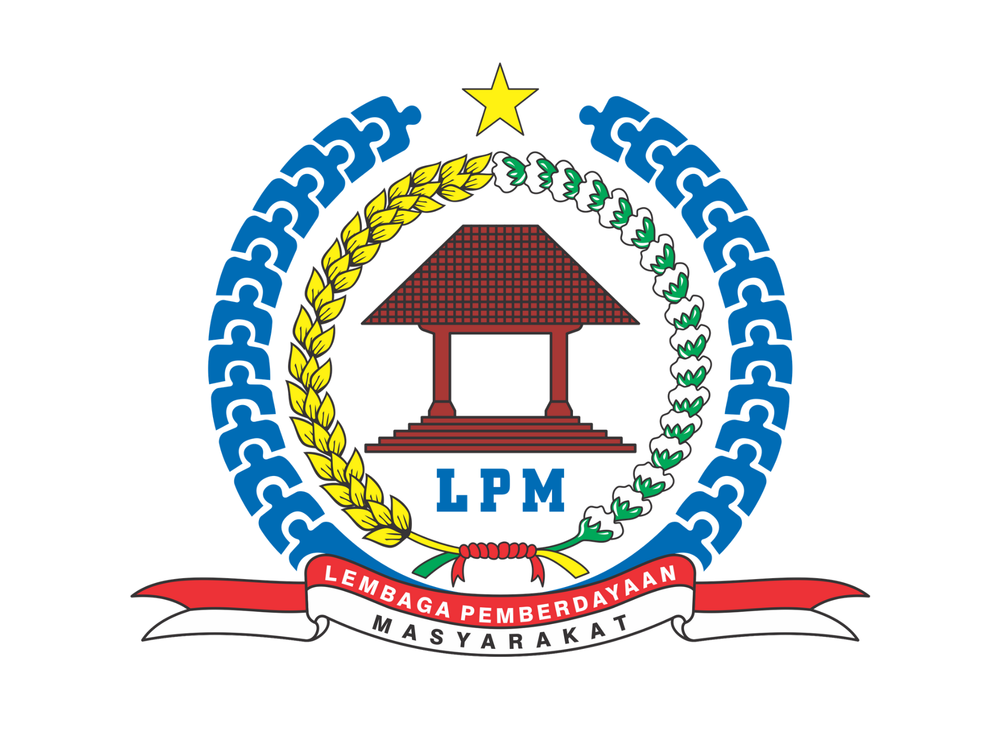

Loading...
Lembaga Masyarakat
Lembaga Pemberdayaan Masyarakat

LPM
Lembaga Pemberdayaan Masyarakat Desa Cijulang
Tentang LPM
Lembaga Pemberdayaan Masyarakat Desa
Tentang LPMD
LPMD adalah singkatan dari Lembaga Pemberdayaan Masyarakat Desa, sebagai lembaga atau wadah yang dibentuk atas prakarsa masyarakat yang difasilitasi Pemerintah melalui musyawarah dan mufakat, sebagai mitra Pemerintah Desa dalam menampung dan mewujudkan aspirasi dan kebutuhan masyarakat di bidang pembangunan.
Dasar Hukum Pembentukan LPM
- PP No. 72 Tahun 2005 tentang Desa
- Permendagri No. 5 Tahun 2007 tentang Pedoman Penataan Lembaga Kemasyarakatan
- Perda Kabupaten Sukabumi No. 9 Tahun 2015 tentang Desa
Kedudukan LPM
- LPMD berkedudukan di Desa dan merupakan Lembaga Masyarakat yang bersifat lokal dan organisatoris berdiri sendiri
- LPMD dalam melaksanakan tugasnya bertanggung jawab kepada Kepala Desa
Tugas Pokok LPM
- Menyusun rencana pembangunan secara partisipatif
- Menggerakan swadaya gotong royong masyarakat
- Melaksanakan dan mengendalikan pembangunan
Fungsi LPM
- Penampungan dan penyaluran aspirasi masyarakat dalam pembangunan
- Penanaman dan pemupukan rasa persatuan dan kesatuan masyarakat dalam kerangka memperkokoh Negara Kesatuan Republik Indonesia
- Peningkatan kualitas dan percepatan pelayanan pemerintah kepada masyarakat
- Penyusunan rencana, pelaksanaan, pelestarian dan pengembangan hasil-hasil pembangunan secara partisipatif
- Penumbuhkembangan dan penggerak prakarsa, partisipasi serta swadaya gotong royong masyarakat
- Penggali, pendayagunaan dan pembangunan potensi sumber daya alam serta keserasian lingkungan hidup

DESA CIJULANG
Desa Cijulang, Kecamatan Cihaurbeuti, Kabupaten Ciamis, Provinsi Jawa Barat. Melayani masyarakat dengan sepenuh hati.
Kontak
© 2024 Desa Cijulang. All rights reserved. | Designed with for masyarakat desa.